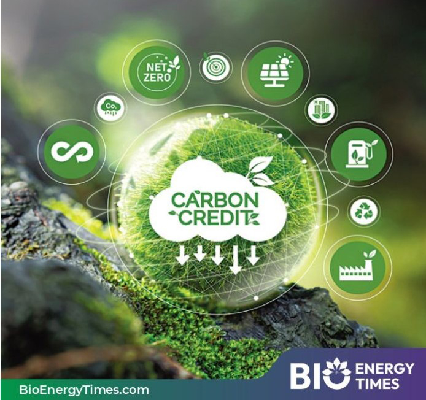
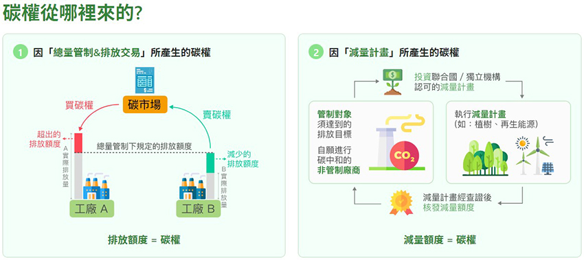
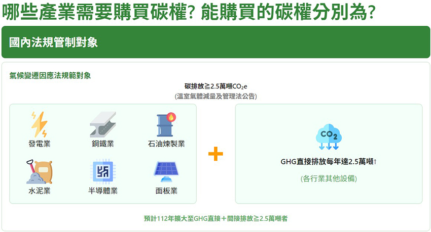
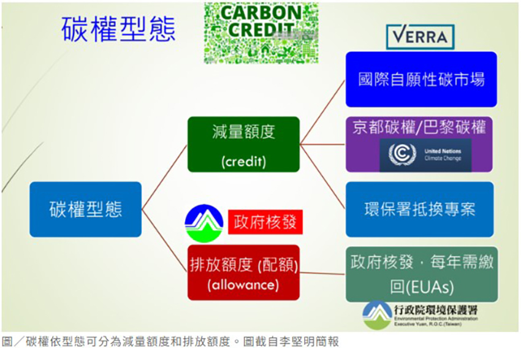

|  |
極端氣候肆虐，全球正面臨氣候變遷的重大挑戰，各國紛紛採取行動以減少碳排放。碳權（carbon credits）在金融市場卻成為一種可交易商品。企業透過購買碳權來抵消自身的碳足跡，這不僅有助於環境保護，還能促進綠色投資與創新。「碳權」簡單來說就是「排放碳的權利」，通常以相當於一公噸tCO2e的排放量為計算單位。產業可透過取得碳權，以符合台灣政府的碳管制規範或因應國際供應鏈與倡議的碳中和要求。
為了激勵這些國家積極減碳，《京都議定書》設立了三個彈性機制，以產生不同形式的碳權，讓各國可以透過合作進行減排，其中包括國際排放交易、共同減量機制以及清潔發展機制。前兩者專為工業國家設計，而清潔發展機制則鼓勵開發中國家參與減碳，成為碳權最早的實踐方式。
根據聯合國政府間氣候變化專門委員會（IPCC）於2018年特別報告，為了將全球升溫限制在1.5°C以內，全球人為二氧化碳排放必須在2050年前達到淨零排放（net zero）。政府和企業除了可以透過建設再生能源和提高能源效率來減少自身的碳排放，還能透過購買碳權來抵消那些無法避免的碳排放。
碳權怎麼產生的？
1. 強制性碳權
由政府作為莊家，實施碳排放總量管制，並向工業、發電等高排放企業分配免費的排放配額 (carbon allowance)。如果A企業努力減少碳排放，便可以將多餘的碳權配額出售給其他企業。值得注意的是，碳權不會在不同的強制性市場之間流通，因此無法透過低買高賣的方式進行操作且核發過程相對嚴謹，避免重複計算的問題。
2. 自願性碳權
透過減碳專案計算得出的碳權（減量額度，credit），例如植樹造林、保護紅樹林及節能等活動所獲得的減量額度，通常也稱為碳信用。自願型碳權則主要作為強制性市場的補充機制，是碳管理政策工具之一，允許「非被管制者」透過執行減碳專案來獲取碳權。
|  |
| 碳權有透過總量管制、減量計畫產生的碳權。（圖片來源：經濟部淨零辦公室） |
碳權交易是什麼？
部分企業排碳需求大，排碳量則低於政府限額。於是，企業間的「交易」制度應運而生，碳權成為一種金融商品，提供企業間相互買賣。例如台北101於2020年利用汰換停車場照明，獲得10年期2,718公噸的碳權額度並售出；未來也將把整棟大樓燈具更換為LED，預計可再獲得6,000多噸碳權。 新聞來源
|  |
| （圖片來源：經濟部淨零辦公室） |
常見碳權有哪幾類？
碳權可透過減量（reducing）、捕獲（capturing）和儲存（storing）碳排來取得。國外新聞網整理如下4種常見碳權種類：
| 1. | 使用再生能源： | 透過採用太陽能、風力、水力等再生能源項目，以降低碳排放。 |
| 2. | 改善能源效率： | 透過使用再生能源以減少現有建築物和基礎設施的能源需求，最簡單的方式把家裡的白熾燈泡換成LED燈泡，以減少能源消耗，或者透過翻新建築物、優化工業流程以提高效率。 |
| 3. | 碳和甲烷的捕獲和封存： | 透過從大氣移除二氧化碳與甲烷，由於甲烷對大氣的危害比二氧化碳高出20倍以上，可透過燃燒甲烷轉換成二氧化碳來減排，再將捕獲的二氧化碳注入到地底儲存。 |
| 4. | 碳匯→碳補償：土地利用與重新造林 | 利用大自然的碳匯，如樹木和土壤來吸收大氣中的二氧化碳，透過保護和復育森林以及植樹造林來抵消碳排放。關於土壤管理，植物透過光合作用將大氣中的二氧化碳轉化為有機物，這些有機物最終以枯死的植物殘留物進入土壤。富含二氧化碳的土壤有助於恢復其自然特性，從而提升作物產量。 |
碳權的核發機構來源：國際機制、國內機制、獨立非政府實體
碳權並非誰都可以進行核發，一般碳權的核發機構有以下三種來源：
| 國際機制 | 國內機制 | 獨立非政府實體 |
| 由國際條約下所建立的國際機制，像《京都議定書》的CDM或是之後的《巴黎協定》。 | 區域、國家或次國家政府建立的國內機制，如加州合規抵換計劃、台灣的溫室氣體抵換專案等。 | 由獨立非政府實體所管理的獨立標準和機制，最常見的則是Verra的碳驗證標準（VCS）和黃金標準（GS）。 |
總結，碳權是在自願性碳交易市場中進行交易的一種商品。企業可透過購買碳權來宣告其氣候目標。此外，在政府法規允許的情況下，某些企業也能夠購買碳權，以抵銷部分受到法律規範的減碳義務，而排放配額則是指在政府強制性市場中設定的交易商品，代表著企業可以排放的溫室氣體總量。若企業想要排放溫室氣體，必須購買相應的配額，因此對政府而言，這是控制溫室氣體排放總量的一項政策工具。
|  |
資料來源